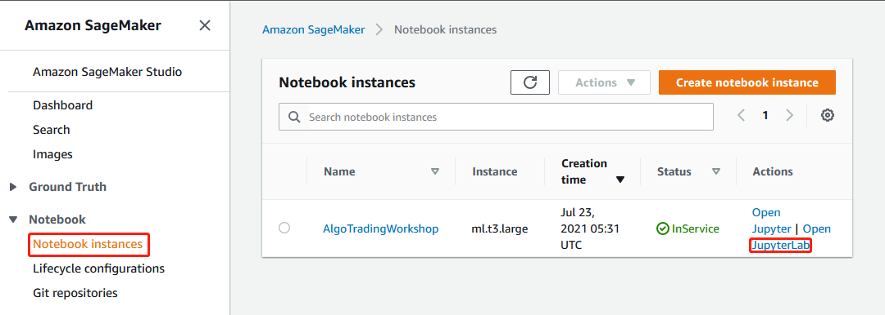
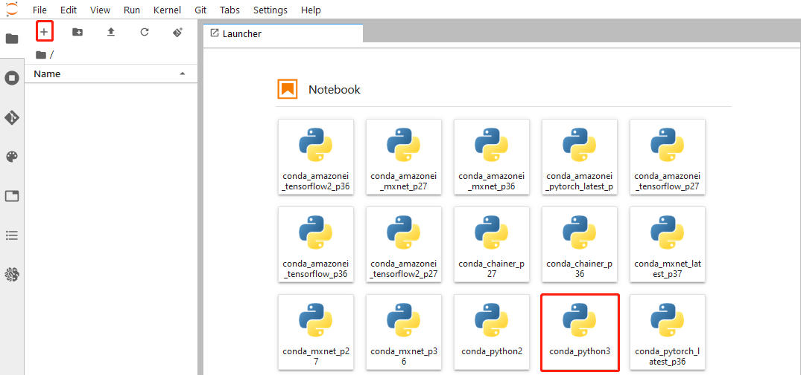
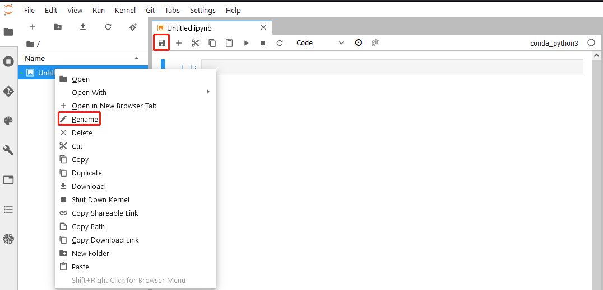
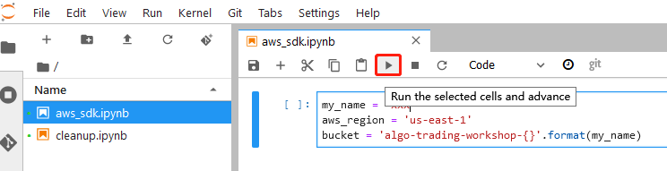
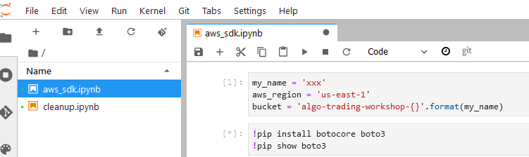
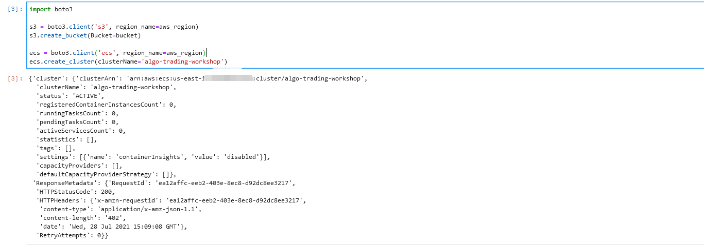

本实验建议在 us-east-1 区域进行。
在这一步中，我们将导航到 SageMaker 控制台在新创建的 Notebook 中运行 AWS SDK 的简单代码。
登录 AWS 控制台，并在 us-east-1 区域打开之前创建的 SageMaker Notebook：

控制台将会跳转到 JupyterLab 界面，在 JupyterLab 中创建一个新的 Notebook：
点击左上角的 + 按钮，这时会显示右侧的 Launcher
在 Launcher 中选择 conda_python3 内核

点击保存按钮，并重命名这个 notebook 为 aws_sdk.ipynb

在这一步中，我们将在刚刚创建的 Notebook 中运行 AWS SDK 的简单代码。
my_name = ''
aws_region = 'us-east-1'
bucket = 'algo-trading-workshop-{}'.format(my_name)

!pip install botocore boto3
!pip show boto3

import boto3
s3 = boto3.client('s3', region_name=aws_region)
s3.create_bucket(Bucket=bucket)
ecs = boto3.client('ecs', region_name=aws_region)
ecs.create_cluster(clusterName='algo-trading-workshop')

看到如上的结果就说明代码执行成功了。这些代码起到和 0.2 中控制台操作完全相同的作用。